# remotes::install_github("cct-datascience/azmetr")
library(azmetr)
library(tsibble)
library(tidyverse)
library(lubridate)
library(feasts)
library(fable)
library(here)QA by Forecasting
1 Problem Definition
We want to use forecasts to do quality assurance of AZMet weather data. Use the existing timeseries available from the API (and possibly also historical data not on the API) to forecast the current day’s (or hour’s) data with prediction interval(s). Data that falls outside of those prediction interval(s) will get flagged as extreme values and possibly interpolated. Variables that need QA include:
- precipitation
- air temperature
- soil temperature
- solar radiation
- wind speed
- humidity
Other variables are (probably?) derived
2 Gathering Information
2.1 Retrieve Data
Download all the daily data available from the API.
#read in historic data
daily_hist <- read_csv(here("data", "daily_hist.csv"))Rows: 177749 Columns: 30
── Column specification ────────────────────────────────────────────────────────
Delimiter: ","
chr (2): meta_station_id, meta_station_name
dbl (27): date_year, date_doy, temp_air_maxC, temp_air_minC, temp_air_meanC...
date (1): datetime
ℹ Use `spec()` to retrieve the full column specification for this data.
ℹ Specify the column types or set `show_col_types = FALSE` to quiet this message.#get data from end of historic data until 2022-10-19
if(!file.exists(here("data", "daily-2022-10-19.rds"))) {
daily <- az_daily(start_date = max(daily_hist$datetime) + 1,
end_date = "2022-10-19")
#save these data
write_rds(daily, here("data", "daily-2022-10-19.rds"))
}
# Read in already existing data, extract last date, retrieve data since that date
daily_old <- read_rds(here("data", "daily-2022-10-19.rds"))
lastdate <- max(daily_old$datetime)
daily_new <- az_daily(start_date = lastdate + 1)
daily <- bind_rows(daily_old, daily_new)
#join to historic data
daily <- bind_rows(daily_hist, daily) Find and resolve duplicates
duplicates(daily, key = c(meta_station_id, meta_station_name), index = datetime)# A tibble: 170 × 69
date_year date_doy datetime temp_…¹ temp_…² temp_…³ relat…⁴ relat…⁵ relat…⁶
<dbl> <dbl> <date> <dbl> <dbl> <dbl> <dbl> <dbl> <dbl>
1 2006 365 2006-12-31 17.8 -1.9 6 100 25.8 74.1
2 2006 365 2006-12-31 17.8 -1.9 6 100 25.8 74.1
3 2006 365 2006-12-31 19.8 1.7 9.6 69.9 21.4 48.1
4 2006 365 2006-12-31 19.8 1.7 9.6 69.9 21.4 48.1
5 2006 365 2006-12-31 20.3 0.9 9.3 78.7 18 50.8
6 2006 365 2006-12-31 20.3 0.9 9.3 78.7 18 50.8
7 2006 365 2006-12-31 15.1 -5.7 3.7 90.8 26.1 59.7
8 2006 365 2006-12-31 15.1 -5.7 3.7 90.8 26.1 59.7
9 2018 220 2018-08-08 36.7 24 29 66.1 24.5 46.7
10 2018 220 2018-08-08 36.7 24 29 66.1 24.5 46.7
# … with 160 more rows, 60 more variables: vp_deficit_mean <dbl>,
# sol_rad_total <dbl>, precip_total_mm <dbl>, temp_soil_10cm_maxC <dbl>,
# temp_soil_10cm_minC <dbl>, temp_soil_10cm_meanC <dbl>,
# temp_soil_50cm_maxC <dbl>, temp_soil_50cm_minC <dbl>,
# temp_soil_50cm_meanC <dbl>, wind_spd_mean_mps <dbl>,
# wind_vector_magnitude <dbl>, wind_vector_dir <dbl>,
# wind_vector_dir_stand_dev <dbl>, wind_spd_max_mps <dbl>, eto_azmet <dbl>, …daily <- daily |>
filter(!are_duplicated(
daily,
key = c(meta_station_id, meta_station_name),
index = datetime
))Convert to tsibble for exploration
daily_ts <- as_tsibble(daily, key = c(meta_station_id, meta_station_name), index = datetime)Any rows marked as needing review?
daily_ts |> filter(meta_needs_review != 0)# A tsibble: 131 x 69 [1D]
# Key: meta_station_id, meta_station_name [29]
date_year date_doy datetime temp_…¹ temp_…² temp_…³ relat…⁴ relat…⁵ relat…⁶
<dbl> <dbl> <date> <dbl> <dbl> <dbl> <dbl> <dbl> <dbl>
1 2022 94 2022-04-04 27.2 10.5 20.0 61.6 15.8 34.0
2 2022 95 2022-04-05 31.0 10.2 21.7 61.3 13.0 31.1
3 2022 96 2022-04-06 31.2 11.3 22.7 57.2 9.5 25.5
4 2022 97 2022-04-07 33.4 7.70 20.9 47.7 3.32 17.4
5 2022 98 2022-04-08 34.3 6.79 21.4 45.2 2.55 17.2
6 2022 99 2022-04-09 33.6 9.42 23.8 36.6 3.76 12.7
7 2022 100 2022-04-10 30.9 16.2 24.0 36.0 9 20.1
8 2022 101 2022-04-11 29.9 17.6 23.5 40.8 12.7 26.7
9 2022 174 2022-06-23 42.3 25.6 31.6 47.6 13.9 32.6
10 2022 67 2022-03-08 21.3 5.96 13.7 55.5 8.71 23.4
# … with 121 more rows, 60 more variables: vp_deficit_mean <dbl>,
# sol_rad_total <dbl>, precip_total_mm <dbl>, temp_soil_10cm_maxC <dbl>,
# temp_soil_10cm_minC <dbl>, temp_soil_10cm_meanC <dbl>,
# temp_soil_50cm_maxC <dbl>, temp_soil_50cm_minC <dbl>,
# temp_soil_50cm_meanC <dbl>, wind_spd_mean_mps <dbl>,
# wind_vector_magnitude <dbl>, wind_vector_dir <dbl>,
# wind_vector_dir_stand_dev <dbl>, wind_spd_max_mps <dbl>, eto_azmet <dbl>, …Check extreme values:
daily_ts |> filter(temp_air_meanC > 200)# A tsibble: 67 x 69 [1D]
# Key: meta_station_id, meta_station_name [13]
date_year date_doy datetime temp_…¹ temp_…² temp_…³ relat…⁴ relat…⁵ relat…⁶
<dbl> <dbl> <date> <dbl> <dbl> <dbl> <dbl> <dbl> <dbl>
1 2015 14 2015-01-14 999 999 999 999 999 999
2 2015 15 2015-01-15 19.4 999 999 999 999 999
3 2017 204 2017-07-23 999 999 999 999 999 999
4 2017 205 2017-07-24 999 999 999 999 999 999
5 2017 206 2017-07-25 999 999 999 999 999 999
6 2017 207 2017-07-26 999 999 999 999 999 999
7 2017 208 2017-07-27 999 999 999 999 999 999
8 2016 357 2016-12-22 999 999 999 999 999 999
9 2016 358 2016-12-23 999 999 999 999 999 999
10 2016 359 2016-12-24 999 999 999 999 999 999
# … with 57 more rows, 60 more variables: vp_deficit_mean <dbl>,
# sol_rad_total <dbl>, precip_total_mm <dbl>, temp_soil_10cm_maxC <dbl>,
# temp_soil_10cm_minC <dbl>, temp_soil_10cm_meanC <dbl>,
# temp_soil_50cm_maxC <dbl>, temp_soil_50cm_minC <dbl>,
# temp_soil_50cm_meanC <dbl>, wind_spd_mean_mps <dbl>,
# wind_vector_magnitude <dbl>, wind_vector_dir <dbl>,
# wind_vector_dir_stand_dev <dbl>, wind_spd_max_mps <dbl>, eto_azmet <dbl>, …Looks like historic data uses 999 for NA probably. I’ll set those to NA
daily_ts <- daily_ts |>
mutate(across(where(is.numeric), \(x) if_else(x == 999, NA_real_, x)))Any gaps in the data?
daily_ts |> scan_gaps()# A tsibble: 268 x 3 [1D]
# Key: meta_station_id, meta_station_name [13]
meta_station_id meta_station_name datetime
<chr> <chr> <date>
1 az04 Safford 2009-01-17
2 az08 Parker 2017-03-05
3 az08 Parker 2017-03-06
4 az08 Parker 2017-03-07
5 az08 Parker 2017-03-08
6 az08 Parker 2017-03-09
7 az08 Parker 2017-03-10
8 az08 Parker 2017-03-11
9 az08 Parker 2019-02-26
10 az08 Parker 2019-02-27
# … with 258 more rowsyes, let’s make them explicit NAs
daily_ts <- fill_gaps(daily_ts, .full = TRUE)Check that gaps were made explicit:
Code
daily_ts |>
filter(meta_station_id %in% c("az23", "az14"))|>
filter(year(datetime) > 2018) |>
ggplot(aes(x = datetime, y = sol_rad_total)) +
geom_line(na.rm = TRUE, size = 0.1) +
geom_point(na.rm = TRUE, size = 0.2) +
facet_wrap(~meta_station_id)
3 Preliminary (exploratory) analysis
I’ll start by looking at a subset of sites just to make visualization easier.
daily_ts_sub <-
daily_ts |>
filter(meta_station_name %in% c("Aguila", "Harquahala", "Tucson", "Maricopa"))Is there missing data?
daily_ts_sub |>
as_tibble() |>
group_by(meta_station_id, meta_station_name) |>
summarize(across(everything(), ~sum(is.na(.))))`summarise()` has grouped output by 'meta_station_id'. You can override using
the `.groups` argument.# A tibble: 4 × 69
# Groups: meta_station_id [4]
meta_station…¹ meta_…² date_…³ date_…⁴ datet…⁵ temp_…⁶ temp_…⁷ temp_…⁸ relat…⁹
<chr> <chr> <int> <int> <int> <int> <int> <int> <int>
1 az01 Tucson 0 0 0 1 2 2 2
2 az06 Marico… 0 0 0 0 0 0 0
3 az07 Aguila 0 0 0 7 7 10 10
4 az23 Harqua… 2 2 0 12 12 12 12
# … with 60 more variables: relative_humidity_min <int>,
# relative_humidity_mean <int>, vp_deficit_mean <int>, sol_rad_total <int>,
# precip_total_mm <int>, temp_soil_10cm_maxC <int>,
# temp_soil_10cm_minC <int>, temp_soil_10cm_meanC <int>,
# temp_soil_50cm_maxC <int>, temp_soil_50cm_minC <int>,
# temp_soil_50cm_meanC <int>, wind_spd_mean_mps <int>,
# wind_vector_magnitude <int>, wind_vector_dir <int>, …Some variables are incomplete or have a short time gap. This may make forecasting difficult.
3.1 Mean Air Temp
daily_ts_sub |>
autoplot(temp_air_meanC) +
labs(title = "Mean Air Temp (ºC)")
Seasonality
daily_ts_sub |> gg_season(temp_air_meanC) + labs(title = "Mean Air Temp (ºC)")
Autocorrelation
daily_ts_sub |>
ACF(temp_air_meanC, lag_max = 180) |>
autoplot()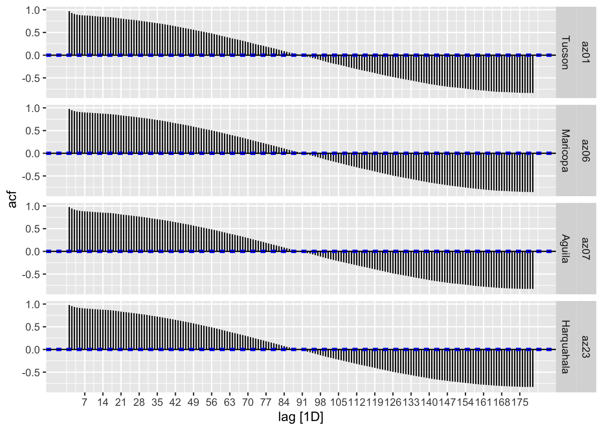
3.2 Solar Radiation
daily_ts_sub |> autoplot(sol_rad_total) + labs(title = "Total Solar Radiation")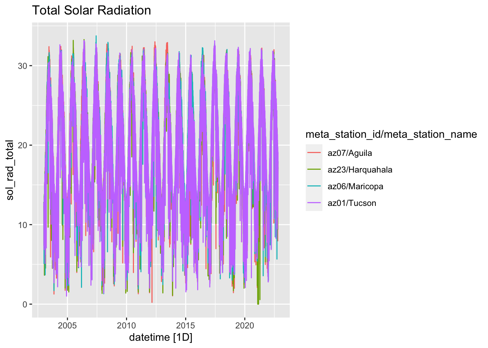
Seasonality
daily_ts_sub |> gg_season(sol_rad_total) + labs(title = "Total Solar Radiation")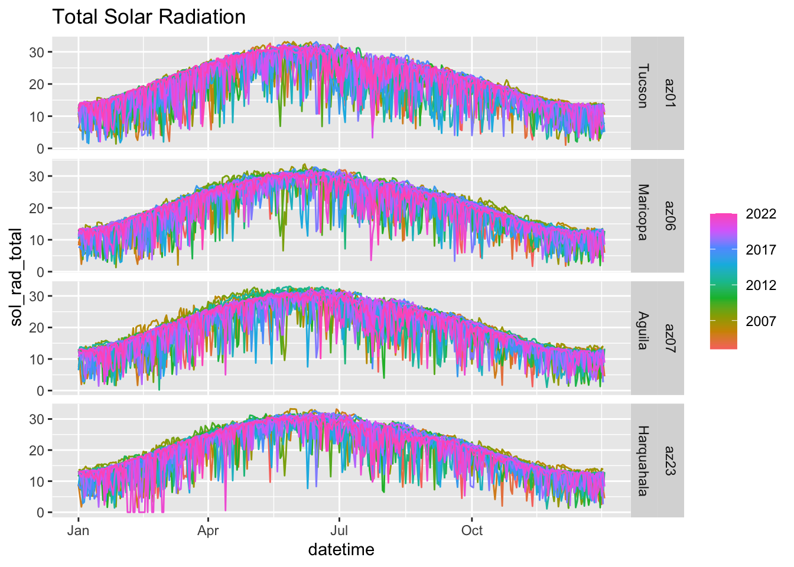
Definitely some weird zeroes. Maybe a super cloudy day, but probably errors.
Code
daily_ts |>
filter(sol_rad_total < 1 & !is.na(sol_rad_total)) |>
select(datetime, sol_rad_total, meta_station_id, meta_needs_review) |>
arrange(sol_rad_total)# A tsibble: 35 x 5 [1D]
# Key: meta_station_id, meta_station_name [10]
datetime sol_rad_total meta_station_id meta_needs_review meta_station_name
<date> <dbl> <chr> <dbl> <chr>
1 2019-01-14 0 az14 NA Yuma N. Gila
2 2021-02-04 0 az23 0 Harquahala
3 2021-02-05 0 az23 0 Harquahala
4 2021-02-06 0 az23 0 Harquahala
5 2021-02-08 0 az23 0 Harquahala
6 2021-02-09 0 az23 0 Harquahala
7 2021-02-12 0 az23 0 Harquahala
8 2021-02-13 0 az23 0 Harquahala
9 2021-02-14 0 az23 0 Harquahala
10 2021-02-15 0 az23 0 Harquahala
# … with 25 more rowsAutocorrelation
daily_ts_sub |>
ACF(sol_rad_total, lag_max = 180) |>
autoplot()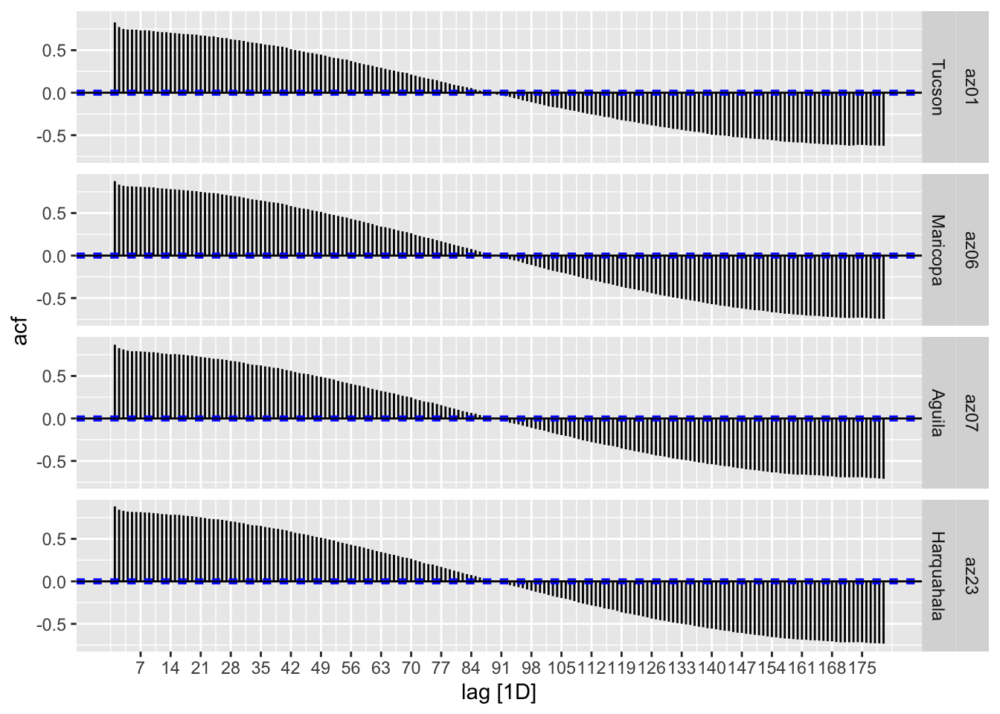
3.3 Precipitation
daily_ts_sub |> autoplot(precip_total_mm) + labs(title = "Precip (mm)")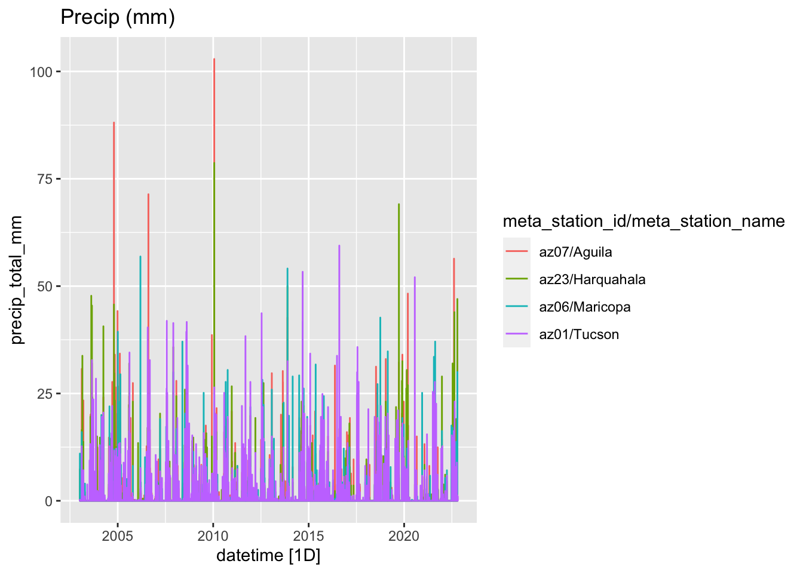
Seasonality
daily_ts_sub |> gg_season(precip_total_mm) + labs(title = "Precip (mm)")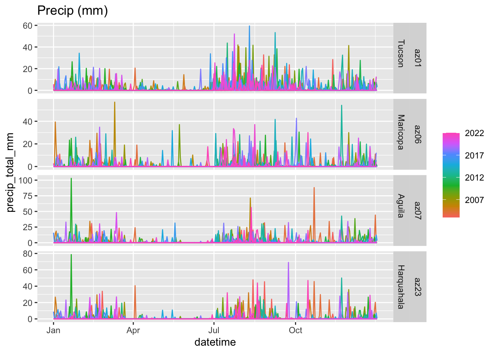
Autocorrelation
daily_ts_sub |>
ACF(precip_total_mm, lag_max = 180) |>
autoplot()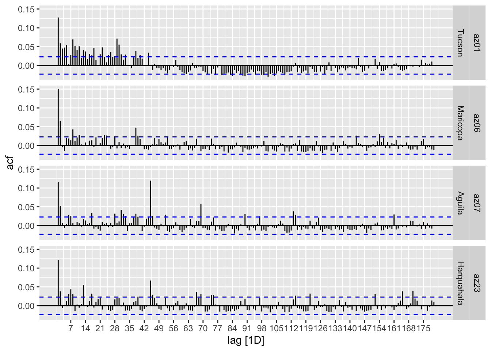
4 QA workflow
Choose and validate models for each variable (see Section 5)
Fit model to all data but most recent day
sol_hist <-
daily_ts_sub |>
select(sol_rad_total) |>
filter(datetime < max(datetime))
sol_new <-
daily_ts_sub |>
select(sol_rad_total) |>
filter(datetime == max(datetime))
sol_fit <- #TODO construct for a list of variables
sol_hist |>
model(sol = SNAIVE(sol_rad_total ~ lag("1 year")))Warning: Non-integer lag orders for random walk models are not supported. Rounding to the nearest integer.
Non-integer lag orders for random walk models are not supported. Rounding to the nearest integer.
Non-integer lag orders for random walk models are not supported. Rounding to the nearest integer.
Non-integer lag orders for random walk models are not supported. Rounding to the nearest integer.- Forecast to new data
sol_fc <-
sol_fit |>
forecast(sol_new, bootstrap = TRUE)Warning: Non-integer lag orders for random walk models are not supported. Rounding to the nearest integer.
Non-integer lag orders for random walk models are not supported. Rounding to the nearest integer.
Non-integer lag orders for random walk models are not supported. Rounding to the nearest integer.
Non-integer lag orders for random walk models are not supported. Rounding to the nearest integer.- Check if data is inside prediction intervals
flags <-
left_join(as_tibble(sol_new), as_tibble(sol_fc |> hilo() |> select(-sol_rad_total))) |>
# make an outlier for testing
mutate(sol_rad_total = if_else(meta_station_id == "az01", 10, sol_rad_total)) |>
mutate(
outlier = if_else(sol_rad_total < `80%`$lower | sol_rad_total > `80%`$upper,
"sol_rad_total",
NA_character_),
extreme = if_else(sol_rad_total < `95%`$lower | sol_rad_total > `95%`$upper,
"sol_rad_total",
NA_character_)
) |>
select(meta_station_id, meta_station_name, datetime, sol_rad_total, outlier, extreme)Joining, by = c("datetime", "meta_station_id", "meta_station_name")flags# A tibble: 4 × 6
meta_station_id meta_station_name datetime sol_rad_total outlier extreme
<chr> <chr> <date> <dbl> <chr> <chr>
1 az01 Tucson 2022-10-25 10 sol_rad_to… <NA>
2 az06 Maricopa 2022-10-25 17.8 <NA> <NA>
3 az07 Aguila 2022-10-25 17.6 <NA> <NA>
4 az23 Harquahala 2022-10-25 17.0 <NA> <NA> - Join back into data??
Here we’d need to deal with the possibility of multiple flags per observation
left_join(daily_ts_sub, flags, by = c("meta_station_id", "meta_station_name", "datetime")) |>
arrange(desc(datetime)) |>
select(outlier, extreme, everything())Warning: Current temporal ordering may yield unexpected results.
ℹ Suggest to sort by `meta_station_id`, `meta_station_name`, `datetime` first.
Current temporal ordering may yield unexpected results.
ℹ Suggest to sort by `meta_station_id`, `meta_station_name`, `datetime` first.
Current temporal ordering may yield unexpected results.
ℹ Suggest to sort by `meta_station_id`, `meta_station_name`, `datetime` first.# A tsibble: 28,952 x 72 [1D]
# Key: meta_station_id, meta_station_name [4]
outlier extreme date_…¹ date_…² datetime temp_…³ temp_…⁴ temp_…⁵ relat…⁶
<chr> <chr> <dbl> <dbl> <date> <dbl> <dbl> <dbl> <dbl>
1 sol_rad_t… <NA> 2022 298 2022-10-25 24.7 2.1 13.2 89
2 <NA> <NA> 2022 298 2022-10-25 24.6 5.6 14.7 81
3 <NA> <NA> 2022 298 2022-10-25 24.6 4 13.5 63
4 <NA> <NA> 2022 298 2022-10-25 25.2 3.7 14.3 82
5 <NA> <NA> 2022 297 2022-10-24 19.4 6.3 14.2 66
6 <NA> <NA> 2022 297 2022-10-24 21.6 10.4 15.6 54
7 <NA> <NA> 2022 297 2022-10-24 20 6.8 13 49
8 <NA> <NA> 2022 297 2022-10-24 23.8 8.6 15.4 46
9 <NA> <NA> 2022 296 2022-10-23 23.9 14.5 19.7 86
10 <NA> <NA> 2022 296 2022-10-23 24.9 17.4 20.7 77
# … with 28,942 more rows, 63 more variables: relative_humidity_min <dbl>,
# relative_humidity_mean <dbl>, vp_deficit_mean <dbl>, sol_rad_total.x <dbl>,
# precip_total_mm <dbl>, temp_soil_10cm_maxC <dbl>,
# temp_soil_10cm_minC <dbl>, temp_soil_10cm_meanC <dbl>,
# temp_soil_50cm_maxC <dbl>, temp_soil_50cm_minC <dbl>,
# temp_soil_50cm_meanC <dbl>, wind_spd_mean_mps <dbl>,
# wind_vector_magnitude <dbl>, wind_vector_dir <dbl>, …5 Learning about forecasting
5.1 Timeseries decomposition
Timeseries decomposition doesn’t work when there is missing data. There are NAs for Harquahala and Bowie stations, so I guess I’ll have to omit those until I figure out how to do this with missing data.
daily_ts_sub |> filter(is.na(sol_rad_total))# A tsibble: 22 x 69 [1D]
# Key: meta_station_id, meta_station_name [2]
date_year date_doy datetime temp_…¹ temp_…² temp_…³ relat…⁴ relat…⁵ relat…⁶
<dbl> <dbl> <date> <dbl> <dbl> <dbl> <dbl> <dbl> <dbl>
1 2016 357 2016-12-22 NA NA NA NA NA NA
2 2016 358 2016-12-23 NA NA NA NA NA NA
3 2016 359 2016-12-24 NA NA NA NA NA NA
4 2016 360 2016-12-25 NA NA NA NA NA NA
5 2016 361 2016-12-26 NA NA NA NA NA NA
6 2017 1 2017-01-01 12.7 4.4 NA NA NA NA
7 2017 2 2017-01-02 11.9 4.6 NA NA NA NA
8 2017 3 2017-01-03 13 1.2 NA NA NA NA
9 2017 5 2017-01-05 NA NA NA NA NA NA
10 2017 6 2017-01-06 NA NA NA NA NA NA
# … with 12 more rows, 60 more variables: vp_deficit_mean <dbl>,
# sol_rad_total <dbl>, precip_total_mm <dbl>, temp_soil_10cm_maxC <dbl>,
# temp_soil_10cm_minC <dbl>, temp_soil_10cm_meanC <dbl>,
# temp_soil_50cm_maxC <dbl>, temp_soil_50cm_minC <dbl>,
# temp_soil_50cm_meanC <dbl>, wind_spd_mean_mps <dbl>,
# wind_vector_magnitude <dbl>, wind_vector_dir <dbl>,
# wind_vector_dir_stand_dev <dbl>, wind_spd_max_mps <dbl>, eto_azmet <dbl>, …dcmp <-
daily_ts_sub |>
filter(meta_station_id == first(meta_station_id)) |> #just use one station for now
model(stl = STL(sol_rad_total ~ season("1_year"))) |>
filter(meta_station_id %in% c("az01", "az06"))
components(dcmp)# A dable: 7,238 x 9 [1D]
# Key: meta_station_id, meta_station_name, .model [1]
# : sol_rad_total = trend + season_1_year + remainder
meta_statio…¹ meta_…² .model datetime sol_r…³ trend seaso…⁴ remai…⁵ seaso…⁶
<chr> <chr> <chr> <date> <dbl> <dbl> <dbl> <dbl> <dbl>
1 az01 Tucson stl 2003-01-01 12.4 19.3 -8.52 1.58 20.9
2 az01 Tucson stl 2003-01-02 12.7 19.3 -8.07 1.49 20.8
3 az01 Tucson stl 2003-01-03 12.7 19.3 -9.00 2.40 21.7
4 az01 Tucson stl 2003-01-04 12.7 19.3 -8.72 2.10 21.4
5 az01 Tucson stl 2003-01-05 12.6 19.3 -8.26 1.53 20.8
6 az01 Tucson stl 2003-01-06 6.86 19.3 -10.4 -2.09 17.2
7 az01 Tucson stl 2003-01-07 12.0 19.3 -8.87 1.51 20.8
8 az01 Tucson stl 2003-01-08 7.41 19.3 -9.26 -2.64 16.7
9 az01 Tucson stl 2003-01-09 12.1 19.3 -7.52 0.295 19.6
10 az01 Tucson stl 2003-01-10 12.7 19.3 -7.73 1.12 20.4
# … with 7,228 more rows, and abbreviated variable names ¹meta_station_id,
# ²meta_station_name, ³sol_rad_total, ⁴season_1_year, ⁵remainder,
# ⁶season_adjustcomponents(dcmp) |>
as_tsibble() |>
autoplot(sol_rad_total, color = "grey") +
facet_wrap(~meta_station_id + meta_station_name, ncol = 1) +
geom_line(aes(y = trend, color = "trend")) 
components(dcmp) |> autoplot()
5.2 Timeseries Features
daily_ts_sub |>
features(sol_rad_total, list(
mean = \(x) mean(x, na.rm = TRUE)
)) |> arrange(mean)# A tibble: 4 × 3
meta_station_id meta_station_name mean
<chr> <chr> <dbl>
1 az01 Tucson 20.3
2 az07 Aguila 20.5
3 az23 Harquahala 20.5
4 az06 Maricopa 20.6daily_ts_sub |> features(sol_rad_total, feat_acf)# A tibble: 4 × 9
meta_station_id meta_sta…¹ acf1 acf10 diff1…² diff1…³ diff2…⁴ diff2…⁵ seaso…⁶
<chr> <chr> <dbl> <dbl> <dbl> <dbl> <dbl> <dbl> <dbl>
1 az01 Tucson 0.827 5.63 -0.342 0.130 -0.592 0.358 0.733
2 az06 Maricopa 0.876 6.71 -0.334 0.126 -0.585 0.347 0.809
3 az07 Aguila 0.867 6.48 -0.346 0.133 -0.590 0.355 0.793
4 az23 Harquahala 0.876 6.77 -0.341 0.133 -0.580 0.341 0.816
# … with abbreviated variable names ¹meta_station_name, ²diff1_acf1,
# ³diff1_acf10, ⁴diff2_acf1, ⁵diff2_acf10, ⁶season_acf1daily_ts_sub |> features(sol_rad_total, feat_stl) # A tibble: 4 × 11
meta_station…¹ meta_…² trend…³ seaso…⁴ seaso…⁵ seaso…⁶ spiki…⁷ linea…⁸ curva…⁹
<chr> <chr> <dbl> <dbl> <dbl> <dbl> <dbl> <dbl> <dbl>
1 az01 Tucson 0.858 0.213 6 3 4.37e-6 16.4 20.0
2 az06 Marico… 0.899 0.214 2 4 2.98e-6 4.06 2.25
3 az07 Aguila 0.894 0.210 6 5 7.44e-6 -18.0 -20.1
4 az23 Harqua… 0.904 0.211 1 3 6.13e-6 9.46 -4.60
# … with 2 more variables: stl_e_acf1 <dbl>, stl_e_acf10 <dbl>, and abbreviated
# variable names ¹meta_station_id, ²meta_station_name, ³trend_strength,
# ⁴seasonal_strength_week, ⁵seasonal_peak_week, ⁶seasonal_trough_week,
# ⁷spikiness, ⁸linearity, ⁹curvature#can't figure out how to set period correctly
daily_ts_sub |>
features(sol_rad_total, features = list(\(x) feat_stl(x, .period = "1 year")))Warning: 4 errors (1 unique) encountered for feature 1
[4] non-numeric argument to binary operator# A tibble: 4 × 2
meta_station_id meta_station_name
<chr> <chr>
1 az01 Tucson
2 az06 Maricopa
3 az07 Aguila
4 az23 Harquahala 5.3 Timeseries Models
Train a model. IN this case, a simple timeseries linear model (TSLM)
fit_tslm <- daily_ts_sub |>
model(TSLM(sol_rad_total~ trend()))
fit_tslm# A mable: 4 x 3
# Key: meta_station_id, meta_station_name [4]
meta_station_id meta_station_name `TSLM(sol_rad_total ~ trend())`
<chr> <chr> <model>
1 az01 Tucson <TSLM>
2 az06 Maricopa <TSLM>
3 az07 Aguila <TSLM>
4 az23 Harquahala <TSLM>A slightly fancier model: seasonal naïve
fit_snaive <- daily_ts_sub |>
model(SNAIVE(sol_rad_total ~ lag("1 year")))Warning: Non-integer lag orders for random walk models are not supported. Rounding to the nearest integer.
Non-integer lag orders for random walk models are not supported. Rounding to the nearest integer.
Non-integer lag orders for random walk models are not supported. Rounding to the nearest integer.
Non-integer lag orders for random walk models are not supported. Rounding to the nearest integer.fit_snaive# A mable: 4 x 3
# Key: meta_station_id, meta_station_name [4]
meta_station_id meta_station_name `SNAIVE(sol_rad_total ~ lag("1 year"))`
<chr> <chr> <model>
1 az01 Tucson <SNAIVE>
2 az06 Maricopa <SNAIVE>
3 az07 Aguila <SNAIVE>
4 az23 Harquahala <SNAIVE>A model including timeseries decomposition:
fit_dcmp <-
daily_ts_sub |>
model(stlf = decomposition_model(
STL(sol_rad_total ~ season(period = "1 year")),
NAIVE(season_adjust)
))Warning: Non-integer lag orders for random walk models are not supported. Rounding to the nearest integer.
Non-integer lag orders for random walk models are not supported. Rounding to the nearest integer.Warning: 1 error encountered for dcmp
[1] promise already under evaluation: recursive default argument reference or earlier problems?
1 error encountered for dcmp
[1] promise already under evaluation: recursive default argument reference or earlier problems?Warning: 2 errors (1 unique) encountered for stlf
[2] Problem while computing `cmp = map(.fit, components)`.5.4 Forecasting methods
Produce forecasts
fit_tslm |> forecast(h = "3 months")# A fable: 364 x 6 [1D]
# Key: meta_station_id, meta_station_name, .model [4]
meta_station_id meta_station_name .model datetime sol_rad…¹ .mean
<chr> <chr> <chr> <date> <dist> <dbl>
1 az01 Tucson TSLM(sol_rad_to… 2022-10-26 N(21, 48) 20.7
2 az01 Tucson TSLM(sol_rad_to… 2022-10-27 N(21, 48) 20.7
3 az01 Tucson TSLM(sol_rad_to… 2022-10-28 N(21, 48) 20.7
4 az01 Tucson TSLM(sol_rad_to… 2022-10-29 N(21, 48) 20.7
5 az01 Tucson TSLM(sol_rad_to… 2022-10-30 N(21, 48) 20.7
6 az01 Tucson TSLM(sol_rad_to… 2022-10-31 N(21, 48) 20.7
7 az01 Tucson TSLM(sol_rad_to… 2022-11-01 N(21, 48) 20.7
8 az01 Tucson TSLM(sol_rad_to… 2022-11-02 N(21, 48) 20.7
9 az01 Tucson TSLM(sol_rad_to… 2022-11-03 N(21, 48) 20.7
10 az01 Tucson TSLM(sol_rad_to… 2022-11-04 N(21, 48) 20.7
# … with 354 more rows, and abbreviated variable name ¹sol_rad_totalfit_tslm |>
forecast(h = "3 months") |>
filter(meta_station_name == "Tucson") |>
autoplot(daily_ts_sub |> filter(year(datetime)>2021))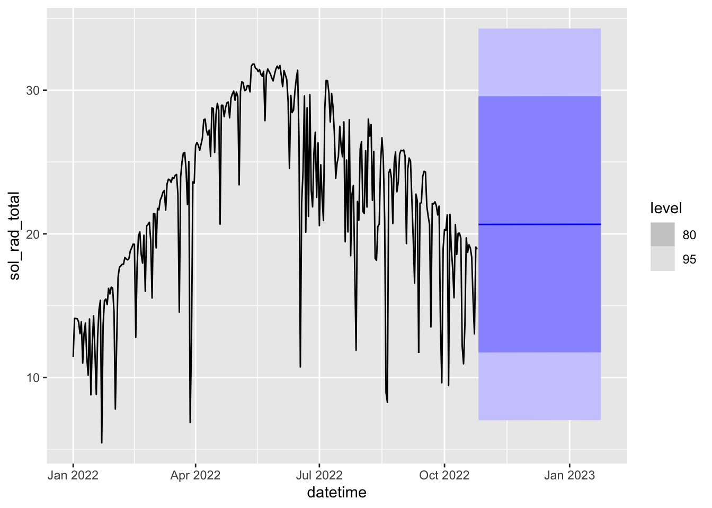
A very bad forecast because there is no trend here.
What about “seasonal naïve”
fit_snaive |>
forecast(h = "1 month") |>
filter(meta_station_name == "Tucson") |>
autoplot(daily_ts_sub |> filter(year(datetime)>2021))Warning: Non-integer lag orders for random walk models are not supported. Rounding to the nearest integer.
Non-integer lag orders for random walk models are not supported. Rounding to the nearest integer.
Non-integer lag orders for random walk models are not supported. Rounding to the nearest integer.
Non-integer lag orders for random walk models are not supported. Rounding to the nearest integer.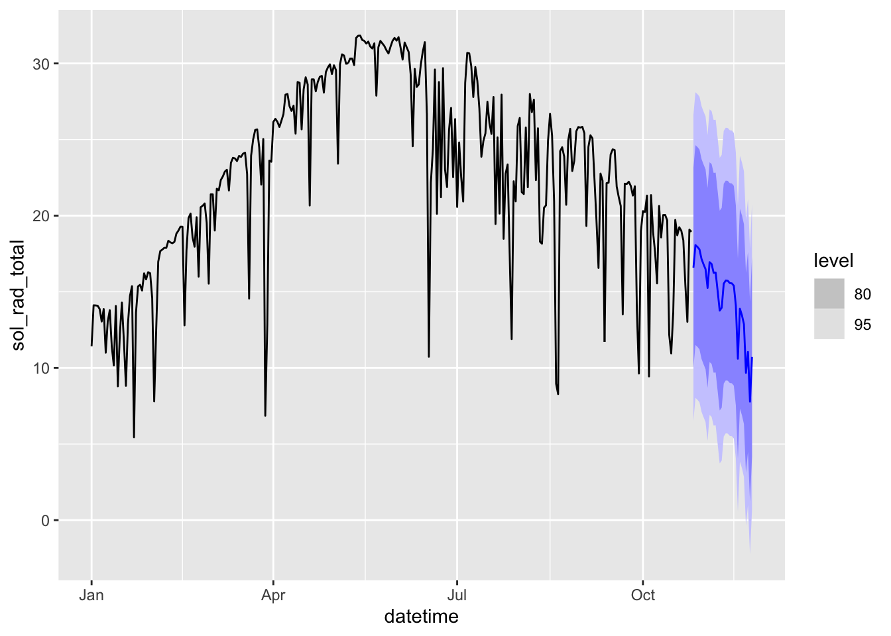
OOf, those prediction inteverals are WIDE.
Check residuals
augment(fit_snaive) |>
ggplot(aes(.innov)) +
geom_histogram()`stat_bin()` using `bins = 30`. Pick better value with `binwidth`.Warning: Removed 1482 rows containing non-finite values (stat_bin).
residuals are leptokurtic and should be normal!
augment(fit_snaive) |>
ACF(.innov) |> autoplot()
residuals are autocorrelated and they shouldn’t be!
fit_snaive |> filter(meta_station_id == "az01") |> gg_tsresiduals()Warning: Removed 365 row(s) containing missing values (geom_path).Warning: Removed 365 rows containing missing values (geom_point).Warning: Removed 365 rows containing non-finite values (stat_bin).
Could use bootstrapped residuals.
fc <- fit_snaive |> forecast(h = "1 month", bootstrap = TRUE)Warning: Non-integer lag orders for random walk models are not supported. Rounding to the nearest integer.
Non-integer lag orders for random walk models are not supported. Rounding to the nearest integer.
Non-integer lag orders for random walk models are not supported. Rounding to the nearest integer.
Non-integer lag orders for random walk models are not supported. Rounding to the nearest integer.fc# A fable: 120 x 6 [1D]
# Key: meta_station_id, meta_station_name, .model [4]
meta_station_id meta_station_name .model datetime sol_rad_to…¹ .mean
<chr> <chr> <chr> <date> <dist> <dbl>
1 az01 Tucson "SNAIVE(sol_… 2022-10-26 sample[5000] 16.6
2 az01 Tucson "SNAIVE(sol_… 2022-10-27 sample[5000] 18.1
3 az01 Tucson "SNAIVE(sol_… 2022-10-28 sample[5000] 18.1
4 az01 Tucson "SNAIVE(sol_… 2022-10-29 sample[5000] 17.8
5 az01 Tucson "SNAIVE(sol_… 2022-10-30 sample[5000] 17.1
6 az01 Tucson "SNAIVE(sol_… 2022-10-31 sample[5000] 16.7
7 az01 Tucson "SNAIVE(sol_… 2022-11-01 sample[5000] 16.5
8 az01 Tucson "SNAIVE(sol_… 2022-11-02 sample[5000] 15.3
9 az01 Tucson "SNAIVE(sol_… 2022-11-03 sample[5000] 17.0
10 az01 Tucson "SNAIVE(sol_… 2022-11-04 sample[5000] 16.8
# … with 110 more rows, and abbreviated variable name ¹sol_rad_totalfc |>
filter(meta_station_name == "Tucson") |>
autoplot(daily_ts_sub |> filter(year(datetime)>2021))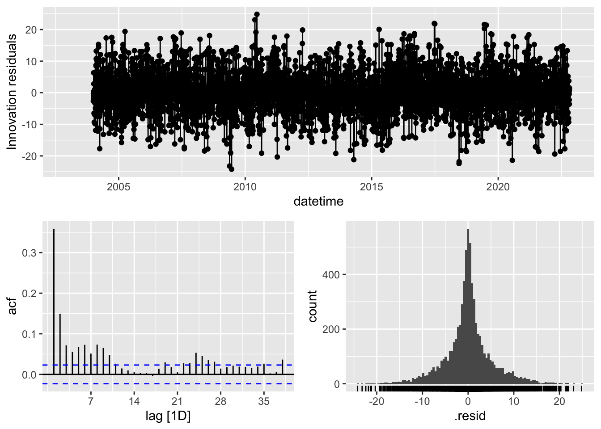
Can do forecasting after decomposition
fit_dcmp |>
forecast(h = "1 month") |>
filter(meta_station_id == "az01") |>
autoplot(daily_ts_sub |> filter(year(datetime)>2021))Warning: Non-integer lag orders for random walk models are not supported. Rounding to the nearest integer.
Non-integer lag orders for random walk models are not supported. Rounding to the nearest integer.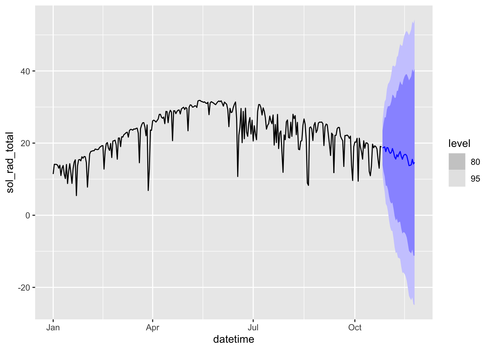
fit_dcmp |> filter(meta_station_id == "az01") |> gg_tsresiduals()Warning: Removed 365 row(s) containing missing values (geom_path).Warning: Removed 365 rows containing missing values (geom_point).Warning: Removed 365 rows containing non-finite values (stat_bin).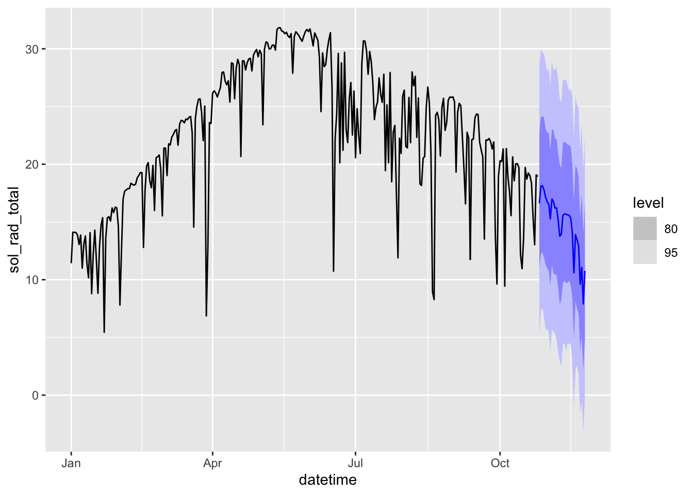
Better??
Let’s find out
5.5 Model/forecast diagnostics
sol_rad_train <-
daily_ts_sub |>
filter(meta_station_id == "az01") |>
filter(year(datetime) < 2022) |>
select(sol_rad_total)
sol_rad_test <-
daily_ts_sub |>
filter(meta_station_id == "az01") |>
filter(year(datetime) >= 2022) |>
select(sol_rad_total)
fit_compare <-
sol_rad_train |>
model(
mean = MEAN(sol_rad_total),
naive = NAIVE(sol_rad_total),
snaive = SNAIVE(sol_rad_total ~ lag("1 year")),
drift = RW(sol_rad_total ~ drift()),
stlf = decomposition_model(
STL(sol_rad_total ~ season(period = "1 year")),
NAIVE(season_adjust)
)
)Warning: Non-integer lag orders for random walk models are not supported. Rounding to the nearest integer.
Non-integer lag orders for random walk models are not supported. Rounding to the nearest integer.fc <- fit_compare |> forecast(sol_rad_test)Warning: Non-integer lag orders for random walk models are not supported. Rounding to the nearest integer.
Non-integer lag orders for random walk models are not supported. Rounding to the nearest integer.fc |>
autoplot(bind_rows(sol_rad_train, sol_rad_test) |> filter(year(datetime)>=2021), level = NULL)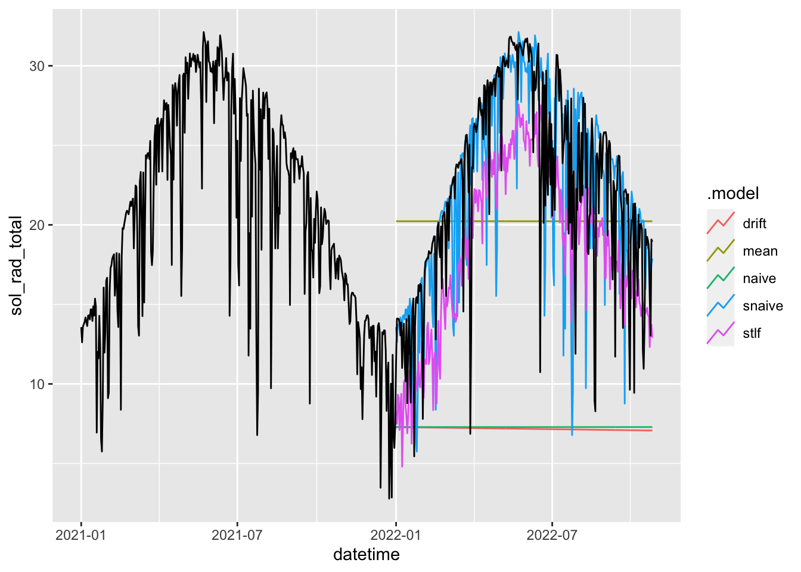
accuracy(fc, sol_rad_test)# A tibble: 5 × 10
.model .type ME RMSE MAE MPE MAPE MASE RMSSE ACF1
<chr> <chr> <dbl> <dbl> <dbl> <dbl> <dbl> <dbl> <dbl> <dbl>
1 drift Test 15.4 16.5 15.4 64.7 64.9 NaN NaN 0.775
2 mean Test 2.32 6.53 5.47 0.533 27.4 NaN NaN 0.774
3 naive Test 15.3 16.4 15.3 64.2 64.4 NaN NaN 0.774
4 snaive Test 0.135 5.06 3.40 -4.01 19.2 NaN NaN 0.311
5 stlf Test 3.97 5.64 5.12 15.0 25.1 NaN NaN 0.368#winkler score evaluates prediction interval accuracy
accuracy(fc, sol_rad_test, list(winkler = winkler_score), level = 80)# A tibble: 5 × 3
.model .type winkler
<chr> <chr> <dbl>
1 drift Test 123.
2 mean Test 21.4
3 naive Test 121.
4 snaive Test 19.5
5 stlf Test 109. best method here is seasonal naive